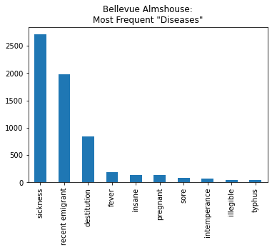
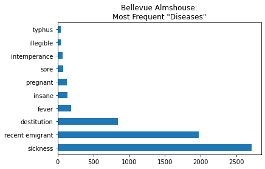
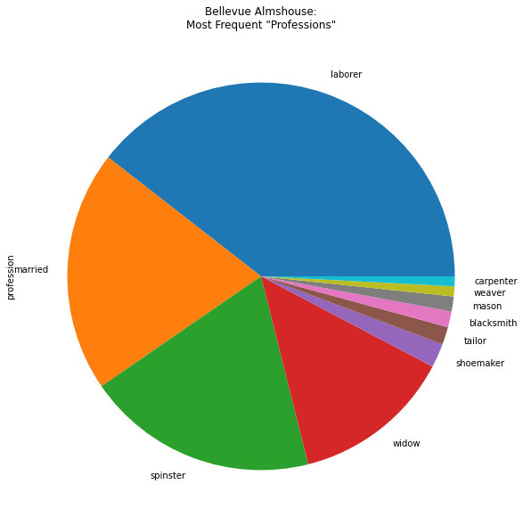
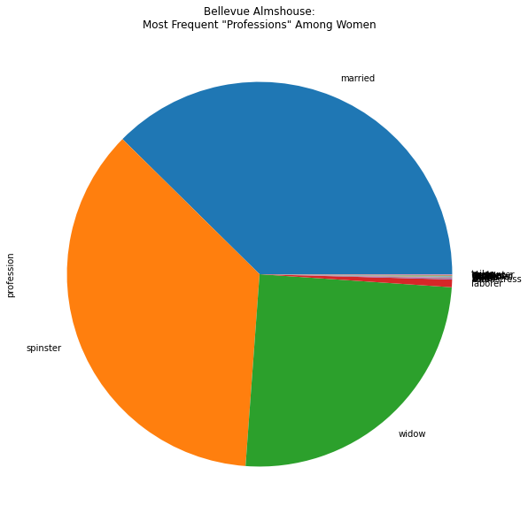

import pandas as pd16 Pandas Basics — Part 1
Note: You can explore the associated workbook for this chapter in the cloud.
In this lesson, we’re going to introduce some of the basics of Pandas, a powerful Python library for working with tabular data like CSV files.
We will cover how to:
- Import Pandas
- Read in a CSV file
- Explore and filter data
- Make simple plots and data visualizations
- Write a CSV file
16.1 Dataset
16.1.1 The Bellevue Almshouse Dataset
Nineteenth-century immigration data was produced with the express purpose of reducing people to bodies; bodies to easily quantifiable aspects; and assigning value to those aspects which proved that the marginalized people to who they belonged were worth less than their elite counterparts.
-Anelise Shrout, “(Re)Humanizing Data”
The dataset that we’re working with in this lesson is the Bellevue Almshouse Dataset, created by historian and DH scholar Anelise Shrout. It includes information about Irish-born immigrants who were admitted to New York City’s Bellevue Almshouse in the 1840s.
The Bellevue Almshouse was part of New York City’s public health system, a place where poor, sick, homeless, and otherwise marginalized people were sent — sometimes voluntarily and sometimes forcibly. Devastated by widespread famine in Ireland, many Irish people fled their homes for New York City in the 1840s, and many of them ended up in the Bellevue Almshouse.
We’re using the Bellevue Almshouse Dataset to practice data analysis with Pandas because we want to think deeply about the consequences of reducing human life to data. As Shrout argues in her essay, this data purposely reduced people to bodies and “easily quantifiable aspects” in order to devalue their lives, potentially enacting “both epistemic and physical violence” on them.
We want to think about how responsible data analysis requires more than just technical tools like Pandas. It also requires an interrogation of the data. Who collected this data? How and why was this data collected? What assumptions are present in this data? What are the consequences of this data in the world? What does this data reflect about the world? For example, Shrout claims that the “Bellevue administrators framed any ailments or difficulties inmates might have had as a consequence of [their immigration] status” — perhaps best exemplified by the fact that a frequent “disease” in the dataset is “recent emigrant.” Below we’re going to explore the prevalence of “recent emigrant” in the data as well as other salient patterns.
16.2 Import Pandas
Note
If you installed Python with Anaconda, you should already have Pandas installed. If you did not install Python with Anaconda, see Pandas Installation.
To use the Pandas library, we first need to import it.
The above import statement not only imports the Pandas library but also gives it an alias or nickname — pd. This alias will save us from having to type out the entire words pandas each time we need to use it. Many Python libraries have commonly used aliases like pd.
16.3 Set Display Settings
By default, Pandas will display 60 rows and 20 columns. I often change Pandas’ default display settings to show more rows or columns.
pd.options.display.max_rows = 10016.4 Read in CSV File
To read in a CSV file, we will use the function pd.read_csv() and insert the name of our desired file path.
bellevue_df = pd.read_csv('../data/bellevue_almshouse_modified.csv', delimiter=",")This creates a Pandas DataFrame object — often abbreviated as df, e.g., bellevue_df. A DataFrame looks and acts a lot like a spreadsheet. But it has special powers and functions that we will discuss in the next few lessons.
When reading in the CSV file, we also specified the encoding and delimiter. The delimiter specifies the character that separates or “delimits” the columns in our dataset. For CSV files, the delimiter will most often be a comma. (CSV is short for Comma Separated Values.) Sometimes, however, the delimiter of a CSV file might be a tab (\t) or, more rarely, another character.
16.5 Display Data
We can display a DataFrame in a Jupyter notebook simply by running a cell with the variable name of the DataFrame.
Pandas Review
NaN is the Pandas value for any missing data. See “Working with missing data” for more information.
bellevue_df| date_in | first_name | last_name | age | disease | profession | gender | children | |
|---|---|---|---|---|---|---|---|---|
| 0 | 1847-04-17 | Mary | Gallagher | 28.0 | recent emigrant | married | w | Child Alana 10 days |
| 1 | 1847-04-08 | John | Sanin (?) | 19.0 | recent emigrant | laborer | m | Catherine 2 mo |
| 2 | 1847-04-17 | Anthony | Clark | 60.0 | recent emigrant | laborer | m | Charles Riley afed 10 days |
| 3 | 1847-04-08 | Lawrence | Feeney | 32.0 | recent emigrant | laborer | m | Child |
| 4 | 1847-04-13 | Henry | Joyce | 21.0 | recent emigrant | NaN | m | Child 1 mo |
| ... | ... | ... | ... | ... | ... | ... | ... | ... |
| 9579 | 1847-06-17 | Mary | Smith | 47.0 | NaN | NaN | w | NaN |
| 9580 | 1847-06-22 | Francis | Riley | 29.0 | lame | superintendent | m | NaN |
| 9581 | 1847-07-02 | Martin | Dunn | 4.0 | NaN | NaN | m | NaN |
| 9582 | 1847-07-08 | Elizabeth | Post | 32.0 | NaN | NaN | w | NaN |
| 9583 | 1847-04-28 | Bridget | Ryan | 28.0 | destitution | spinster | w | NaN |
9584 rows × 8 columns
There are a few important things to note about the DataFrame displayed here:
- Index
- The bolded ascending numbers in the very left-hand column of the DataFrame is called the Pandas Index. You can select rows based on the Index.
- By default, the Index is a sequence of numbers starting with zero. However, you can change the Index to something else, such as one of the columns in your dataset.
- Truncation
- The DataFrame is truncated, signaled by the ellipses in the middle
...of every column. - The DataFrame is truncated because we set our default display settings to 100 rows. Anything more than 100 rows will be truncated. To display all the rows, we would need to alter Pandas’ default display settings yet again.
- The DataFrame is truncated, signaled by the ellipses in the middle
- Rows x Columns
- Pandas reports how many rows and columns are in this dataset at the bottom of the output (9584 x 8 columns).
- This is very useful!
16.5.1 Display First n Rows
To look at the first n rows in a DataFrame, we can use a method called .head().
bellevue_df.head(2)| date_in | first_name | last_name | age | disease | profession | gender | children | |
|---|---|---|---|---|---|---|---|---|
| 0 | 1847-04-17 | Mary | Gallagher | 28.0 | recent emigrant | married | w | Child Alana 10 days |
| 1 | 1847-04-08 | John | Sanin (?) | 19.0 | recent emigrant | laborer | m | Catherine 2 mo |
bellevue_df.head(10)| date_in | first_name | last_name | age | disease | profession | gender | children | |
|---|---|---|---|---|---|---|---|---|
| 0 | 1847-04-17 | Mary | Gallagher | 28.0 | recent emigrant | married | w | Child Alana 10 days |
| 1 | 1847-04-08 | John | Sanin (?) | 19.0 | recent emigrant | laborer | m | Catherine 2 mo |
| 2 | 1847-04-17 | Anthony | Clark | 60.0 | recent emigrant | laborer | m | Charles Riley afed 10 days |
| 3 | 1847-04-08 | Lawrence | Feeney | 32.0 | recent emigrant | laborer | m | Child |
| 4 | 1847-04-13 | Henry | Joyce | 21.0 | recent emigrant | NaN | m | Child 1 mo |
| 5 | 1847-04-14 | Bridget | Hart | 20.0 | recent emigrant | spinster | w | Child |
| 6 | 1847-04-14 | Mary | Green | 40.0 | recent emigrant | spinster | w | And child 2 months |
| 7 | 1847-04-19 | Daniel | Loftus | 27.0 | destitution | laborer | m | NaN |
| 8 | 1847-04-10 | James | Day | 35.0 | recent emigrant | laborer | m | NaN |
| 9 | 1847-04-10 | Margaret | Farrell | 30.0 | recent emigrant | widow | w | NaN |
16.5.2 Display Random Sample
To look at a random sample of rows, we can use the .sample() method.
bellevue_df.sample(10)| date_in | first_name | last_name | age | disease | profession | gender | children | |
|---|---|---|---|---|---|---|---|---|
| 5768 | 1847-10-27 | Elizabeth | Phinney | 40.0 | destitution | seamstress | w | NaN |
| 441 | 1847-03-01 | Catherine | Mullin | 1.0 | recent emigrant | NaN | w | NaN |
| 1397 | 1847-04-30 | Mary Anne | Graham | 30.0 | sickness | widow | w | NaN |
| 7170 | 1847-10-22 | Ellen | Reynolds | 18.0 | sickness | spinster | w | NaN |
| 8203 | 1847-05-19 | Richard | Hennesy | 63.0 | destitution | baker | m | NaN |
| 1708 | 1847-03-13 | Patrick | Kane | 52.0 | recent emigrant | laborer | m | NaN |
| 4026 | 1846-08-05 | Henry | Reddy | 33.0 | NaN | peddler | m | NaN |
| 3108 | 1846-01-07 | Rhoda (Johanna) | Dunn | 24.0 | NaN | widow | w | NaN |
| 5313 | 1847-03-22 | Terence | Smith | 37.0 | sickness | laborer | m | NaN |
| 8043 | 1846-08-03 | Eliza | Duffy | 22.0 | NaN | spinster | w | NaN |
16.6 Get Info
To get important info about all the columns in the DataFrame, we can use .info().
bellevue_df.info()<class 'pandas.core.frame.DataFrame'>
RangeIndex: 9584 entries, 0 to 9583
Data columns (total 8 columns):
# Column Non-Null Count Dtype
--- ------ -------------- -----
0 date_in 9584 non-null object
1 first_name 9580 non-null object
2 last_name 9584 non-null object
3 age 9534 non-null float64
4 disease 6497 non-null object
5 profession 8565 non-null object
6 gender 9584 non-null object
7 children 37 non-null object
dtypes: float64(1), object(7)
memory usage: 599.1+ KBThis report will tell us how many non-null, or non-blank, values are in each column, as well as what type of data is in each column.
| Pandas Data Type | Explanation |
|---|---|
object |
string |
float64 |
float |
int64 |
integer |
datetime64 |
date time |
16.7 Calculate Summary Statistics
To calculate summary statistics for every column in our DataFrame, we can use the .describe() method.
bellevue_df.describe()| age | |
|---|---|
| count | 9534.000000 |
| mean | 30.332604 |
| std | 14.179608 |
| min | 0.080000 |
| 25% | 21.000000 |
| 50% | 28.000000 |
| 75% | 39.000000 |
| max | 97.000000 |
By default, .describe() will only compute columns with numerical data. To include all columns, we can use include='all.
Pandas Review
NaN is the Pandas value for any missing data. See “Working with missing data” for more information.
bellevue_df.describe(include='all')| date_in | first_name | last_name | age | disease | profession | gender | children | |
|---|---|---|---|---|---|---|---|---|
| count | 9584 | 9580 | 9584 | 9534.000000 | 6497 | 8565 | 9584 | 37 |
| unique | 653 | 523 | 3142 | NaN | 75 | 172 | 5 | 36 |
| top | 1847-05-24 00:00:00 | Mary | Kelly | NaN | sickness | laborer | m | Child |
| freq | 113 | 979 | 137 | NaN | 2706 | 3108 | 4958 | 2 |
| first | 1846-01-01 00:00:00 | NaN | NaN | NaN | NaN | NaN | NaN | NaN |
| last | 1847-12-31 00:00:00 | NaN | NaN | NaN | NaN | NaN | NaN | NaN |
| mean | NaN | NaN | NaN | 30.332604 | NaN | NaN | NaN | NaN |
| std | NaN | NaN | NaN | 14.179608 | NaN | NaN | NaN | NaN |
| min | NaN | NaN | NaN | 0.080000 | NaN | NaN | NaN | NaN |
| 25% | NaN | NaN | NaN | 21.000000 | NaN | NaN | NaN | NaN |
| 50% | NaN | NaN | NaN | 28.000000 | NaN | NaN | NaN | NaN |
| 75% | NaN | NaN | NaN | 39.000000 | NaN | NaN | NaN | NaN |
| max | NaN | NaN | NaN | 97.000000 | NaN | NaN | NaN | NaN |
Here are some insights that can be gleaned from these summary statistics: - For the column date_in, the earliest recorded admission to the Bellevue Almshouse (first) is 1846-01-01 and the latest (last) is 1847-12-31 - For the column first_name, the most frequently occurring first name (top) is Mary, which appears 979 times (freq) - For the column last_name, the most frequently occurring last name (top) is Kelly, which appears 137 times (freq) - For the column age, average age in the dataset (mean) is 30, the youngest (min) is .8, and the oldest (max) is 97 - For the columns disease and profession, there are 75 unique (unique) diseases and 172 unique (unique) professions - For the column children, there are 37 rows that include information about children (count) (i.e., rows that do not have blank values)
16.8 Select Columns
To select a column from the DataFrame, we will type the name of the DataFrame followed by square brackets and a column name in quotations marks.
bellevue_df['disease']0 recent emigrant
1 recent emigrant
2 recent emigrant
3 recent emigrant
4 recent emigrant
...
9579 NaN
9580 lame
9581 NaN
9582 NaN
9583 destitution
Name: disease, Length: 9584, dtype: objectPython Review
Dictionary
person1 = {“name”: “Mary Gallagher”, “age”: 28, “profession”: “married”}
Key -> Value person1[‘name’] —> “Mary Gallagher”
Technically, a single column in a DataFrame is a Series object.
type(bellevue_df['disease'])pandas.core.series.SeriesA Series object displays differently than a DataFrame object. To select a column as a DataFrame and not as a Series object, we will use two square brackets.
bellevue_df[['disease']]| disease | |
|---|---|
| 0 | recent emigrant |
| 1 | recent emigrant |
| 2 | recent emigrant |
| 3 | recent emigrant |
| 4 | recent emigrant |
| ... | ... |
| 9579 | NaN |
| 9580 | lame |
| 9581 | NaN |
| 9582 | NaN |
| 9583 | destitution |
9584 rows × 1 columns
type(bellevue_df[['disease']])pandas.core.frame.DataFrameBy using two square brackets, we can also select multiple columns at the same time.
bellevue_df[['first_name', 'last_name', 'disease']]| first_name | last_name | disease | |
|---|---|---|---|
| 0 | Mary | Gallagher | recent emigrant |
| 1 | John | Sanin (?) | recent emigrant |
| 2 | Anthony | Clark | recent emigrant |
| 3 | Lawrence | Feeney | recent emigrant |
| 4 | Henry | Joyce | recent emigrant |
| ... | ... | ... | ... |
| 9579 | Mary | Smith | NaN |
| 9580 | Francis | Riley | lame |
| 9581 | Martin | Dunn | NaN |
| 9582 | Elizabeth | Post | NaN |
| 9583 | Bridget | Ryan | destitution |
9584 rows × 3 columns
Heads up! The code below will cause an error.See what happens if we try to select multiple columns as a Series…
bellevue_df['first_name', 'last_name', 'disease']KeyError: ('first_name', 'last_name', 'disease')16.9 Count Values
To count the number of unique values in a column, we can use the .value_counts() method.
```{sidebar} On Bellevue Almshouse “Diseases” > Some were diagnosed with medically recognizable illnesses, including “fever,” “dropsy” and “neuralgia.” Others were diagnosed with “diseases” that made visible the ways in which immigrants were failing to meet the expectations of urban citizenship. These included “destitution” and “recent emigrant.” Neither of these diagnoses reflected an immigrant’s health. Nevertheless, they were treated as pathologies, and those pathologies governed city officials perceptions of immigrants. Sickness, injuries or destitution were subsumed under the pathology of “recent emigrant.” This diagnosis also determined immigrants’ paths through the New York City public health system.
-Anelise Shrout, “(Re)Humanizing Data: Digitally Navigating the Bellevue Almshouse”
::: {.cell scrolled='true' execution_count=116}
``` {.python .cell-code}
bellevue_df['disease'].value_counts()sickness 2706
recent emigrant 1974
destitution 841
fever 192
insane 138
pregnant 134
sore 79
intemperance 71
illegible 47
typhus 46
injuries 31
ulcers 26
ophthalmia 19
vagrant 17
lame 15
debility 11
rheumatism 11
bronchitis 9
blind 9
dropsy 8
phthisis 8
old age 7
syphilis 7
erysipelas 6
dysentery 6
diarrhea 6
broken bone 5
cripple 5
measles 3
burn 3
drunkenness 3
abandonment 2
scrofula 2
tuberculosis 2
delusion dreams 2
jaundice 2
pneumonia 2
sprain 2
scarletina 2
fits 2
piles 2
ascites 1
sunburn 1
colic 1
ungovernable 1
del femur 1
congested head 1
hernia 1
cut 1
tumor 1
eczema 1
emotional 1
paralysis 1
orchitis 1
neuralgia 1
contusion 1
asthma 1
beggar 1
from trial 1
disabled 1
hypochondria 1
ague 1
abscess 1
bleeding 1
spinal disease 1
smallpox 1
severed limb 1
horrors 1
throat cut 1
seizure 1
rickets 1
phagadaena 1
deaf 1
bruise 1
poorly 1
Name: disease, dtype: int64:::
Look through the so-called “diseases” recorded in the Bellevue Almshouse data and consider what these categories reflect about New York City in the 1840s, particularly with regard to immigration status.
To select the top 10 most frequent values in the “disease” column, we can combine value_counts() with regular Python list slicing.
bellevue_df['disease'].value_counts()[:10]sickness 2706
recent emigrant 1974
destitution 841
fever 192
insane 138
pregnant 134
sore 79
intemperance 71
illegible 47
typhus 46
Name: disease, dtype: int64bellevue_df['profession'].value_counts()[:10]laborer 3108
married 1584
spinster 1521
widow 1053
shoemaker 158
tailor 116
blacksmith 104
mason 98
weaver 66
carpenter 65
Name: profession, dtype: int64In a similar vein, consider what these “professions” reflect about New York City in the 1840s.
16.10 Make and Save Plots
Pandas makes it easy to create plots and data visualizations. We can make a simple plot by adding .plot() to any DataFrame or Series object that has appropriate numeric data.
bellevue_df['disease'].value_counts()[:10].plot(kind='bar', title='Bellevue Almshouse:\nMost Frequent "Diseases"')<matplotlib.axes._subplots.AxesSubplot at 0x112db7f10>
We specify the title with the title= parameter and the kind of plot by altering the kind= parameter: * ‘bar’ or ‘barh’ for bar plots
‘hist’ for histogram
‘box’ for boxplot
‘kde’ or ‘density’ for density plots
‘area’ for area plots
‘scatter’ for scatter plots
‘hexbin’ for hexagonal bin plots
‘pie’ for pie plots
For example, to make a horizontal bar chart, we can set kind='barh'
bellevue_df['disease'].value_counts()[:10].plot(kind='barh',title='Bellevue Almshouse:\nMost Frequent "Diseases"').get_figure().savefig('Bellevue')
To make a pie chart, we can set kind='pie'
bellevue_df['profession'].value_counts()[:10].plot(kind='pie', figsize=(10, 10), title='Bellevue Almshouse:\nMost Frequent "Professions"')<matplotlib.axes._subplots.AxesSubplot at 0x1130ee590>
To save a plot as an image file or PDF file, we can assign the plot to a variable called ax, short for axes.
Then we can use ax.figure.savefig('FILE-NAME.png') or ax.figure.savefig('FILE-NAME.pdf').
ax = bellevue_df['profession'].value_counts()[:10].plot(kind='pie', figsize=(10, 10), title='Bellevue Almshouse:\nMost Frequent "Professions"')
ax.figure.savefig('Bellevue-professions_pie-chart.pdf')If your plot is being cut off in the image, see Pandas Basics Part 2 (“Prevent Labels From Getting Cut Off”).
16.11 Filter/Subset Data
We can filter a Pandas DataFrame to select only certain values. Filtering data by certain values is similar to selecting columns.
We type the name of the DataFrame followed by square brackets and then, instead of inserting a column name, we insert a True/False condition. For example, to select only rows that contain the value “teacher,” we insert the condition bellevue_df['profession'] == 'teacher'
bellevue_df[bellevue_df['profession'] == 'teacher']| date_in | first_name | last_name | age | disease | profession | gender | children | |
|---|---|---|---|---|---|---|---|---|
| 2195 | 1847-03-12 | Michael | Rush | 40.0 | recent emigrant | teacher | m | NaN |
| 2692 | 1846-03-11 | Thomas | Brady | 45.0 | NaN | teacher | m | NaN |
| 3773 | 1846-07-06 | Henry | Dunlap | 66.0 | NaN | teacher | m | NaN |
| 4283 | 1846-09-03 | John B. | Murray | 45.0 | NaN | teacher | m | NaN |
| 4286 | 1846-09-03 | Alexander | Alcock | 46.0 | NaN | teacher | m | NaN |
| 4611 | 1846-10-15 | John | Dillon | 32.0 | NaN | teacher | m | NaN |
| 5224 | 1847-03-01 | George F. | Robins | 57.0 | destitution | teacher | m | NaN |
| 6251 | 1847-08-05 | Patrick | McGowen | 24.0 | sickness | teacher | m | NaN |
| 8293 | 1847-05-27 | William | Smith | 29.0 | destitution | teacher | m | NaN |
| 8641 | 1847-06-23 | Thomas | Gleason | 50.0 | sickness | teacher | m | NaN |
It can be helpful to isolate this condition and see that it produces a long list of True/False pairs for every row.
bellevue_df['profession'] == 'teacher'0 False
1 False
2 False
3 False
4 False
...
9579 False
9580 False
9581 False
9582 False
9583 False
Name: profession, Length: 9584, dtype: boolFiltering DataFrames can sometimes get confusing and unwieldy (as conditions within conditions pile up like Russian dolls). It can be helpful to make a separate variable for a filter, as below.
teacher_filter = bellevue_df['profession'] == 'teacher'bellevue_df[teacher_filter]| date_in | first_name | last_name | age | disease | profession | gender | children | |
|---|---|---|---|---|---|---|---|---|
| 2195 | 1847-03-12 | Michael | Rush | 40.0 | recent emigrant | teacher | m | NaN |
| 2692 | 1846-03-11 | Thomas | Brady | 45.0 | NaN | teacher | m | NaN |
| 3773 | 1846-07-06 | Henry | Dunlap | 66.0 | NaN | teacher | m | NaN |
| 4283 | 1846-09-03 | John B. | Murray | 45.0 | NaN | teacher | m | NaN |
| 4286 | 1846-09-03 | Alexander | Alcock | 46.0 | NaN | teacher | m | NaN |
| 4611 | 1846-10-15 | John | Dillon | 32.0 | NaN | teacher | m | NaN |
| 5224 | 1847-03-01 | George F. | Robins | 57.0 | destitution | teacher | m | NaN |
| 6251 | 1847-08-05 | Patrick | McGowen | 24.0 | sickness | teacher | m | NaN |
| 8293 | 1847-05-27 | William | Smith | 29.0 | destitution | teacher | m | NaN |
| 8641 | 1847-06-23 | Thomas | Gleason | 50.0 | sickness | teacher | m | NaN |
In a similar vein, it’s often useful to make a new variable for a filtered DataFrame. For example, let’s say we wanted to look at only the women in the dataset and see the most commons professions.
women_filter = bellevue_df['gender'] == 'w'bellevue_women = bellevue_df[women_filter]bellevue_women['profession'].value_counts()married 1564
spinster 1507
widow 1043
laborer 27
seamstress 3
baker 2
single 2
waiter 2
(illegible) 1
gardener 1
weaver 1
servant 1
peddler 1
cook 1
sham 1
carpenter 1
tailor 1
Name: profession, dtype: int64bellevue_women['profession'].value_counts().plot(kind='pie', figsize=(10,10), title='Bellevue Almshouse:\nMost Frequent "Professions" Among Women')<matplotlib.axes._subplots.AxesSubplot at 0x113785a90>
There’s a lot we can do with filters beyond exact value matches with an equals operator ==.
We can also incorporate >, <, >=, <= with integers, floats, and even dates. For example, we can filter the DataFrame for only people who arrived to the Bellevue Almshouse on or after ‘1847-04-17’
date_filter = bellevue_df['date_in'] >= '1847-04-17'bellevue_df[date_filter]| date_in | first_name | last_name | age | disease | profession | gender | children | |
|---|---|---|---|---|---|---|---|---|
| 0 | 1847-04-17 | Mary | Gallagher | 28.0 | recent emigrant | married | w | Child Alana 10 days |
| 1 | 1847-04-08 | John | Sanin (?) | 19.0 | recent emigrant | laborer | m | Catherine 2 mo |
| 2 | 1847-04-17 | Anthony | Clark | 60.0 | recent emigrant | laborer | m | Charles Riley afed 10 days |
| 3 | 1847-04-08 | Lawrence | Feeney | 32.0 | recent emigrant | laborer | m | Child |
| 4 | 1847-04-13 | Henry | Joyce | 21.0 | recent emigrant | NaN | m | Child 1 mo |
| ... | ... | ... | ... | ... | ... | ... | ... | ... |
| 9564 | 1846-07-03 | Michael | Brown | 37.0 | NaN | laborer | m | NaN |
| 9565 | 1846-02-11 | Thomas | Kennedy | 69.0 | NaN | laborer | m | NaN |
| 9568 | 1847-04-02 | Ann | Gedney | 30.0 | sickness | widow | w | NaN |
| 9574 | 1846-08-14 | Ann | Murray | 25.0 | NaN | NaN | w | NaN |
| 9578 | 1846-05-23 | Joseph | Aton | 69.0 | NaN | shoemaker | m | NaN |
4614 rows × 8 columns
16.12 Write to CSV
To output a new CSV file, we can use the .to_csv method with a name for the file in quotation marks.
Here’s how we might output a new CSV file that only includes rows with women.
bellevue_women.to_csv("Bellevue_women.csv", encoding='utf-8', index=False)In addition to a filename, we’re also specifying that the encoding is utf-8 and that the Index (the bolded left-most column) is not included in the CSV file.
16.13 Further Resources
- 10 minutes to Pandas, Pandas Official Documentation
- “Data Manipulation with Pandas”, Python Data Science, Jake VanderPlas
If there is anything wrong, please open an issue on GitHub or email f.pianzola@rug.nl